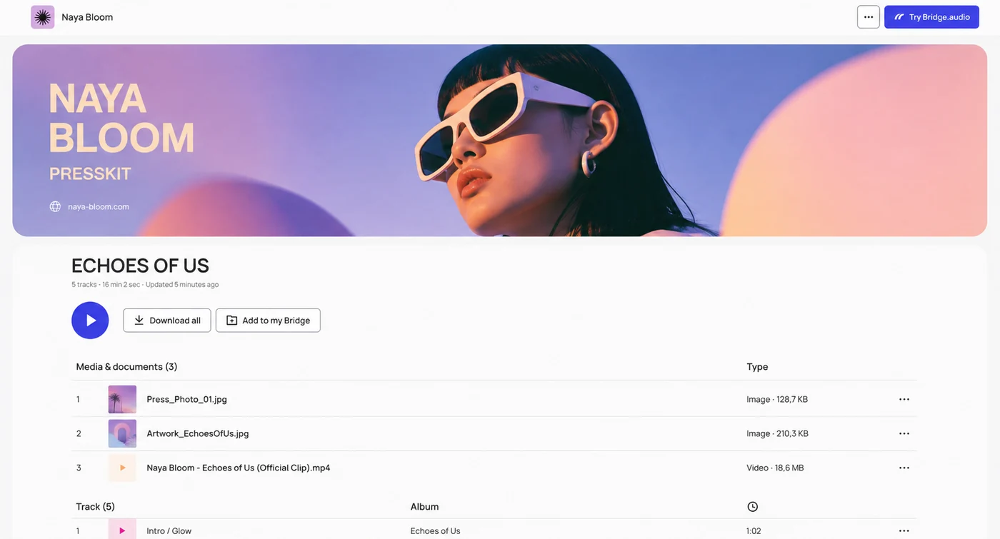

01
Just as simple to start
Upload your media, create a link and share it. Bridge Free is enough to get going.
Dropbox, Box and Google Drive store and share your files. Bridge does that too for compatible media, then lets you listen, find, present and get discovered in an environment built for music.
A Drive is often still ideal for documents and general file sync. Bridge takes over when your files become a music catalog shared between artists, teams and professional recipients.


The same simple start, and much more value once the tracks arrive.
Upload your media, create a link and share it. Bridge Free is enough to get going.
Listen to and browse tracks in a clear project, without rebuilding the context.
Music tags from Free; smart Prompt and Similarity Search depending on your plan.
Smart Inbox, collaborative sharing, listening insights on eligible plans and optional Hubs.
The same release, shared two ways. On a Drive, recipients open a folder and then each file. On Bridge, they open the project: press play, browse the tracks and find artwork, video and information in one place.
Recreated list view of a typical shared Google Drive folder, not a screenshot. Drive previews each audio file on its own; credits and context sit in separate files.

Actual Bridge share page: one play button for the whole project, with artwork, video, documents and track details together.
Dropbox, Box and Google Drive also preview audio. The difference is the presentation and the music workflow around it.
Syncing large volumes, collaborating on documents, managing access and connecting office tools: general-purpose platforms are often the best fit.
For music catalogs, Bridge brings together listening, metadata, Smart Inbox, projects and specialized search. Advanced features and Hub exposure depend on your plan and options.
Pick a competitor to compare on mobile, or scan all four columns on desktop. Each tool keeps its own strengths.
In short: Dropbox is particularly well suited to file sync and sharing; Box to document management and structured teams; Google Drive to co-editing and the Google ecosystem. Bridge.audio is the specialized choice for managing, listening to, searching and presenting a music catalog, with a Smart Inbox and advanced music search depending on your plan.
Features vary by plan: check Dropbox, Box, Google Drive and Bridge.audio. Advanced AI features may depend on subscriptions or add-ons.
Instead of juggling tools, keep one continuous workflow. Actual Bridge.audio screenshots.
Collect demos and incoming files in the Smart Inbox.
Four free plans with different purposes: the Drives offer gigabytes; Bridge offers a first music Workspace.
2 GB of file storage
10 GB, files up to 250 MB
15 GB shared with Gmail and Photos
50 tracks, 3 members, unlimited projects, Smart Inbox, basic sharing and basic auto-tagging.
Bridge Free is designed to start a music catalog, not to offer as much general-purpose storage. Prices and limits may change; check the official pages before choosing.
Bridge Talent Pro starts at €5/month and Music Pro at €9/month (options and limits depend on configuration). Paid Dropbox, Box and Google Workspace prices depend on country, number of users and billing: see Dropbox pricing, Box, Google Workspace and Bridge. Free storage: Google 15 GB; Dropbox 2 GB.
For music work, Bridge can replace several everyday uses: centralizing, receiving, listening to and sharing compatible files. For office documents, general file sync and large archives, Dropbox, Box or Google Drive usually remain complementary.
Yes. Dropbox offers Dash, Box has Box AI and Google Drive has Gemini. Bridge’s difference is music-specific enrichment and search: musical auto-tagging, plus Prompt and Similarity Search on Pro plans.
Yes. The Bridge Free plan includes a Smart Inbox, basic sharing and up to 50 tracks in the Workspace, with three members. Limits and advanced features vary by plan.
Bridge presents tracks inside projects with an audio player. Dropbox, Box and Google Drive also preview many formats. The difference is in the presentation, the metadata and the music workflow.
Dropbox, Box and Google Drive are usually better suited to general backups, office work and very varied files. Bridge is the better fit for a music catalog you need to search, pitch and put to work, with track and media limits tied to your plan.
No. The Free plan does not include Discovery Hubs. Paid plans offer visibility options depending on eligibility, configuration and the applicable commercial terms.
Upcoming Bridge versioning is not presented as available. Publishing to Discovery Hubs is optional, subject to conditions and not included in the Free plan. Bridge is not a general office suite or a universal replacement for file-sync and document-governance systems. Sources checked 22 November 2026.
Start free with a Workspace, a Smart Inbox and a catalog you can actually browse like music.
Comparison based on public features checked 22 November 2026. Capabilities depend on each provider's plan and configuration; advanced AI features may require specific subscriptions or modules. Prices depend on country, number of users and billing period.